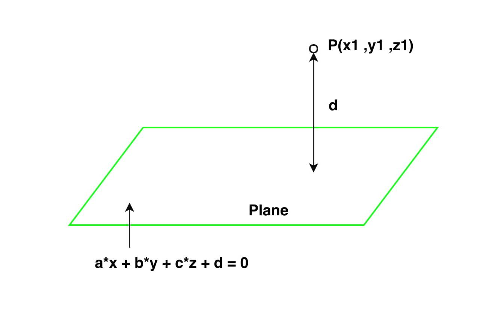

Dynamic Audio Emitters
My team's audio lead aproached me with a problem: The waterfalls in the game are too big for their sound to be emitted from a single point. The solution was to build some kind of audio emitter that would follow the player, but only within the confines of the waterfall. In order to accomplish this, I turned to linear algebra. By defining a waterfall as a plane it was a simple task to calculate the nearst point on that plane and treat that point as the audio emitter.
By defining width and height, I was able to then restrict the emitter to a section of the plane. This prevented the emitter from "leaving" the waterfall and chasing the player where it was not supposed to.
The above system worked, but was a pain to use. The plane, width, and height of every waterfall had to be carefully input by hand which took time and was frustrating to tweek. To solve this, I made use of Unity's prefab system. I created a prefab consisting of a Unity Plane Object and and a sphere parented to to plane. At run time, the shpere's location is determined as the closest point on the plane and its restrictions are based off the extends of the Plane Object. This resulted in a prefab that could be rotated, scaled, or translated in any way my audio team wanted, all through the Unity editor.
Minigames
While the designers were hard at work playtesting and building levels, they asked me to create and implement a couple minigames for them to sprinkle in to the world. We decided on a crab that, when hit, dropped a shell collectable. I requested a simple crab model from the art team and got to work.
The implementation is quite simple. The crab is just an object that with a list of waypoints. It moves toward the next waypoint in the list and when it gets there, it turns and moves toward the next one.
I got out of my depth when it came to the animations. As a programmer, I had little experince using Unity's animation system and the art team was hard at work on their own tasks. So I started messing with keyframes and played around with different versions of what would happen when the crab got hit. Originally, it would get knocked over and its eyes became Xs. This did not test well as many players thought the crabs were cute and felt bad about killing them. Ultimately, I removed the Xs and andded a short running away animation to show that the crab was ok. This minigame is reported as the highlight of the game by many playtesters.